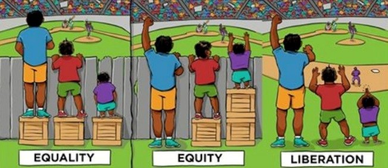

Accommodation vs. Accessibility
It is important to note that not all disabilities are apparent, take for example cognitive disabilities like attention deficit hyperactivity disorder (ADHD) and dyslexia, or psychological disabilities such as mental health conditions. People all-too-frequently doubt the existence of non-apparent disabilities or play-down their effects, and it is counterproductive to consider disabilities this way.
Instead of categorizing disabilities into “visible” vs “invisible” or “apparent” vs “non-apparent”, it is more useful to consider barriers that might exist in any given context.

This graphic shows three versions of the same scene. There are three people trying to watch a baseball game from behind the outfield fence. One is tall enough to see over the fence without a riser, the other two are not. We will talk more about each of these in the following pages, yet let's state some facts first.
The first frame labeled "equality", everyone has the same restrictions:
- The three individuals are of different heights.
- Each individual has an identical box (we will call them "accommodations") to stand on.
- There is a fence (we will call this "the barrier") in front of the three,
- This arrangement allows two of the three to see over the barrier.
The middle frame labeled "equity", each person has a different setup:
- We still have three individuals of different heights.
- The tallest has no accommodation, the next shortest has one accommodation, and the shortest has two accommodations.
- The barrier still exists.
- This arrangement allows all three to see over the barrier.
The final frame labeled "liberation", all restrictions are removed:
- We still have three individuals of different heights.
- The barrier has been removed.
- No accommodations are being used.
- This arrangement allows all three to see the game.
In this graphic, the left panel represents inaccessibility; the middle panel represents accommodation, and the right panel represents accessibility.